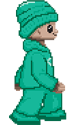
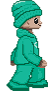
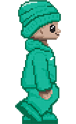
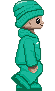

26.1. Анимације задаци¶
На прошлом часу прошли смо кроз општи принцип по ком ћемо програмирати анимације. Провежбај ово кроз наредних неколико задатака.
Насумично цртање кругова¶

Напиши програм који четири пута у секунди мења положај и боју круга који се приказује на прозору. Положај и боју одређивати насумично, тако да се круг у сваком тренутку налази унутар прозора.
Приступимо решавању овог задатка на начин који смо описали. Размисли прво који подаци описују стање наше анимације.
- Координата x центра лоптице.
- Тачно.
- Брзина лоптице.
- Покушај поново.
- Координата y центра лоптице.
- Тачно.
- Боја лоптице.
- Тачно.
- Број лоптица у прозору.
- Покушај поново.
Q-86: Које променљиве одређују стање анимације?
Дакле, тренутно стање сцене одређено је координатама центра
xиy, полупречникомrи бојом кругаbojaи њих ћемо представити глобалним променљивама (при чему се полупречник неће мењати).
Размисли сада шта је задатак функције crtaj.
- Да насумично одреди положај лоптице тако што ће одредити вредности променљивих ``x`` и ``y``.
- Покушај поново.
- Да пре цртања обоји позадину у бело, да би се обрисао претходни цртеж.
- Тачно.
- Да нацрта круг са центром у тачки одређеној координатама ``x`` и ``y``.
- Тачно.
- Да обоји позадину прозора у боју ``boja``.
- Покушај поново.
- Да помери лоптицу један пиксел удесно увећавајући вредност променљиве ``x``.
- Покушај поново.
Q-87: Шта функција crtaj треба да уради?
Дакле, функција
crtajће бојити позадину у бело (како би се обрисао претходни круг) и цртаће круг на основу тренутних вредности глобалних променљивих.
Размисли сада шта је задатак функције novi_frejm.
- Да помери лоптицу један пиксел удесно увећавајући вредност променљиве ``x``.
- Покушај поново.
- Да увећа полупречник лоптице ``r`` за 1.
- Покушај поново.
- Да нацрта круг са центром у тачки одређеној координатама ``x`` и ``y``.
- Покушај поново.
- Да на насумичан начин одреди нову вредност променљиве ``boja``.
- Tачно.
- Да насумично одреди положај лоптице тако што ће одредити вредности променљивих ``x`` и ``y``.
- Тачно.
Q-88: Шта функција novi_frejm треба да уради?
Дакле, функција
novi_frejmће насумично одредити боју новог круга и одредиће x и y координате центра, тако да круг не испадне ван екрана. То ће важити ако x координата буде у интервалу \([r, sirina-r]\), а y координата буде у интервалу \([r, visina-r]\).
Покушај да самостално напишеш цео програм. Ако не успеш, не брини, јер тек почињеш да учиш како се реализују апликације. Потражи помоћ и затим допуни започети програмски кôд.
Срце које куца¶
Напиши програм који приказује анимацију срца које куца. Срце можеш
приказати коришћењем слике srce.png.
{kind=link}
Једини податак који се мења од фрејма до фрејма је то да ли треба или не треба приказати срце. Можемо увести логичку променљиву
treba_crtati.У функцији
crtajслику ћемо приказивати само ако променљиваtreba_crtatiима вредност тачно (тј.True).У функцији
novi_frejmмењаћемо вредност променљивеtreba_crtati. Ако јој је тренутно вредностTrue, тада треба да се промени наFalse, а ако јој је тренутно вредностFalse, тада треба да се промени наTrue. Најлакши начин да се то уради је да текућу вредност негирамо помоћу оператораnot(наравно, можемо употребити и гранање).
Покушај да на основу овога допуниш започети програмски кôд.
Смајлић и тужић¶
Микица често мења расположење. Час је срећна, час је тужна. Напиши
програм који приказује слике смајлића и тужића које се наизменично
смењују. Можеш употребити слике smajlic.png и tuzic.png.
{kind=link}

Овај задатак је поново веома сличан претходном.
Логичка променљива
smajlicће одређивати стање програма.Ако је у функцији
crtajвредност те променљивеTrue, приказаћемо слику смајлића, а ако је вредностFalse, приказаћемо слику тужића.У функцији
novi_frejmнегираћемо вредност променљивеsmajlic.
Покушај да на основу овога потпуно самостално напишеш програм. Ако не успеш, онда потражи помоћ и допуни започети програмски кôд.
Сијалице¶
Напиши програм који приказује дисплеј на коме је поређано 10 сијалица, тако да се наизменично укључује једна по једна.
Стање програма ће у потпуности бити одређено вредношћу променљиве редним бројем сијалице која је укључена.
У функцији
crtajисцртаваћемо само укључену сијалицу у облику белог круга. Пречник сваке сијалице ћемо одредити тако што ћемо ширину екрана поделити редним бројем сијалице. Координата x центра те сијалице биће одређена редним бројем укључене сијалице (центар сијалице 0 налази се на растојањуrод леве ивице екрана, центар сијалице 1 на растојањуr + 2r, центар сијалице 2 на растојањуr+4rи тако даље).У функцији
novi_frejmувећаваћемо редни број укључене сијалице, при чему ћемо га враћати на нулу када достигне укупан број сијалица.
Покушај да на основу претходне дикусије потпуно самостално решиш задатак. Ако не успеш, онда потражи помоћ, па допуни започети кôд.
Цртани филм¶
Напиши програм који приказује цртани филм тако што наизменично
приказује пет слика на екрану на којима је приказан дечак који се
шета у различитим положајима. Слике носе називе setanje1.png до
setanje5.png.
 

 


Овај задатак личи на задатак у ком смо током анимације циклично
мењали боје позадине, једино што ћемо уместо листе која садржи називе
боја чувати листу која садржи слике које чине цртани филм. Слике је
пожељно учитати на почетку програма, пре почетка анимације (подсетимо
се, слику можемо учитати помоћу функције
pg.image.load).
Стање анимације биће одређено искључиво редним бројем слике која се тренутно приказује. Променљива
slikaпредстављаће позицију слике у листи која се приказује у текућем фрејму.Функција
crtajима задатак само да обрише екран (бојећи позадину у бело) и да затим прикаже слику из листеslikeкоја се налази на позицији одређеној променљивомslika(подсетимо се, слику приказујемо помоћу функцијеprozor.blit).Функција
novi_frejmће имати задатак да увећа вредност променљивеslika, тако да се вредност врати на нулу када превазиђе последњу вредност у листи.
На основу претходне дискусије допуни наредни програм.